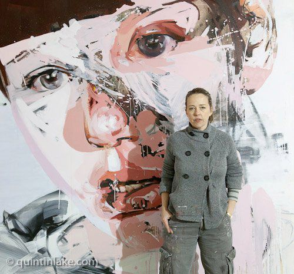

Jenny Saville

Human perception of the body is so acute and knowledgeable that the smallest hint of a body can trigger recognition.
—Jenny Saville
In her depictions of the human form, Jenny Saville transcends the boundaries of both classical figuration and modern abstraction. Oil paint,
applied in heavy layers, becomes as visceral as flesh itself, each painted mark maintaining a supple, mobile life of its own. As Saville pushes,
smears, and scrapes the pigment over her large-scale canvases, the distinctions between living, breathing bodies and their painted representations
begin to collapse.
Born in 1970 in Cambridge, England, Saville attended the Glasgow School of Art from 1988 to 1992,
spending a term at the University of Cincinnati in 1991. Her studies focused her interest in “imperfections” of flesh,
with all of its societal implications and taboos.
(All rights reserved to Gagosian Galleries.) Read more
Jerome Lagarrigue
Jerome Lagarrigue is a French-American painter known for his dynamic portraiture and exploration of identity, movement,
and emotion. Born in 1973 in Paris, he studied illustration at the Rhode Island School of Design and later transitioned
into fine art. His work, often blending realism with abstraction, captures the nuances of human expression and social themes.
Lagarrigue has exhibited internationally and received numerous accolades, solidifying his place as a contemporary master of figurative painting.
Check Jerome's Website